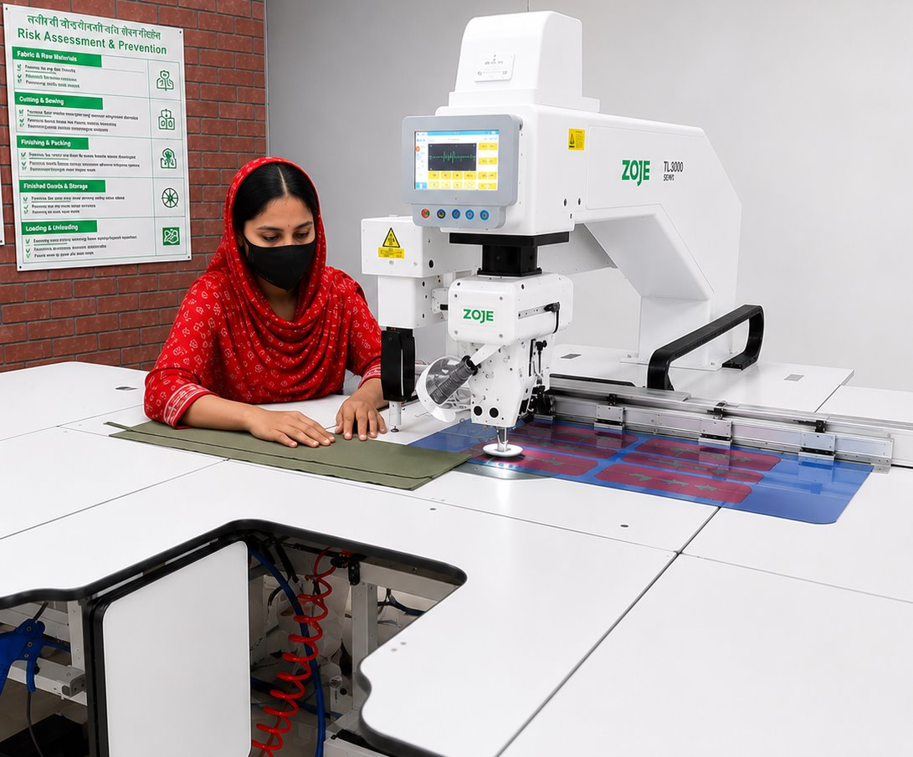

400K-450K
pcs monthly capacity
Manufacturing facilities
Compliant garment manufacturing facilities in Savar, Dhaka for outerwear, workwear, high-visibility safety wear, flame-retardant items and uniforms.
Factory overview
Texpro Eco Apparel Ltd. operates from a main factory building and adjacent annex in Savar, Dhaka, producing outerwear, workwear, hi-vis safety wear, waterproof jackets, uniforms and FR garments for USA, Canada and European buyers.
Factory floor images
Old-site Texpro imagery shows sewing, template-guided operations, spreading, cutting and technical garment manufacturing support.

Operator support for precise pocket, seam and construction details used in workwear and technical outerwear programs.

Template-guided sewing support helps protect consistent workmanship, measurements and finishing across bulk orders.

Production-floor preparation supports efficient cutting, clean bundling and reliable handoff into sewing lines.
Factory Quick Facts
Technology and export
Factory Facilities
Export capability
Factory systems support workwear, safety wear, waterproof outerwear, FR items, uniforms, coveralls and industrial safety garments.
Request Quote
Share category, monthly volume, materials, compliance needs, and shipment timeline.